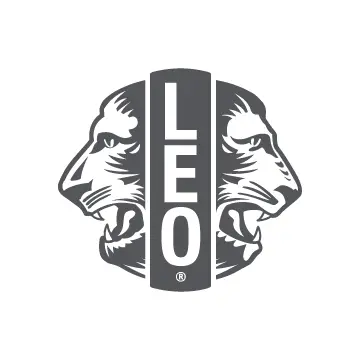

Our amazing team at Vancouver Pioneer LEO Club have been conducting activities and events since 2018. We collectively focus on several key area following the Lions Club Internation: Vision, Hunger, Diabetes, Cancer, and Environment. Events that we have handled include TWECS eyeglass recycling, food bank fundraising, healthcare seminars, and city clean up efforts. Here are all of our past events.
